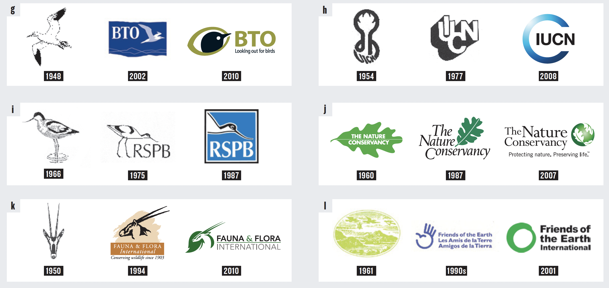
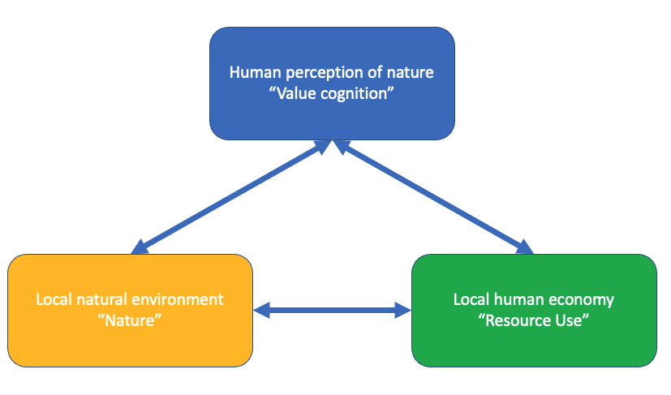
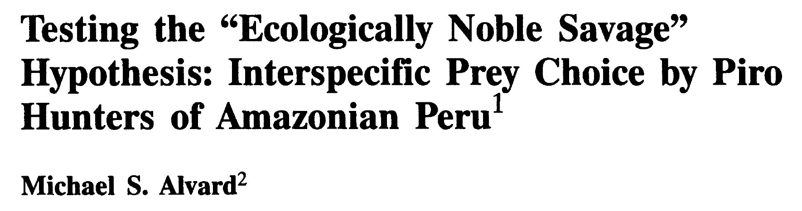
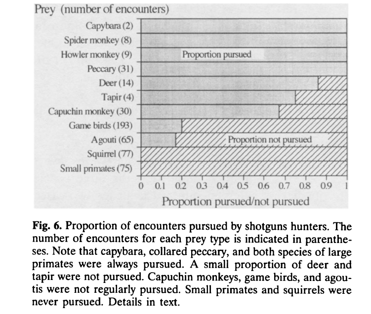

Data downloaded from https://www.globalforestwatch.org on 2023-02-07
Biologia della Conservazione
Class 1 - Introduction to Conservation Biology
2024-11-04
Who am I?
- Evolutionary and Conservation Biologist
- Research associate @ Tor Vergata University
- Steering Committee member of the IUCN-SSC-Iguana Specialist
- PhD in Conservation Genetics from Mississippi State University (MS, USA)
- Master Degree in Ecology and Evolution from University of Rome Tor Vergata
Course overview
This is a mandatory module for master level students enrolled in the “Biologia Ambientale” degree at the University of Rome Tor Vergata. It is worth 5 CFU for a total of 40 hours (i.e., 20 classes of 2 hours each) to be administered in person during the first semester of academic year 2024/2025.
Classes are on Monday (14:00-16:00) and Thursday (14:00-16:00) in “Aula Centro Studi Pesca” (Laboratori di Ecologia Sperimentale ed Acquacoltura).
The course will be thought in Italian unless international students are present. In this latter case the course will be thought in English. All the material and the literature used will be in English.
Check the website and your e-mail periodically for information. The website for this class is hosted at https://giulianocolosimo.github.io/biologia_della_conservazione_24-25/
You need to be in class, follow, participate and take notes. I will try to make the class as interactive as possible. I need you to talk to me!!!
Resources
There is no mandatory textbook to buy!! While this is true, the overall implant of classes and the material presented is largely sourced from the book Conservation Biology (Dyke & Lamb, 2020).
- Introduction to conservation genetics (Frankham, Ballou, & Briscoe, 2010)
- Conservation and the Genomics of Populations (Allendorf et al., 2022)
- Literature I will provide every class
You are encouraged to contact me by e-mail with questions and doubts or come to my office. My office hours are between 10:00 and 12:00 every Wednesday. My office is number 14, located on the first floor of the main building at “Laboratori di Ecologia Sperimentale ed Acquacoltura”. If you want to come and see me it is always a good idea to first send me an e-mail at giuliano.colosimo@uniroma2.it or giuliano.colosimo@protonmail.com.
Learning objectives
The course aims at providing students with the most fundamental tools to understand, acknowledge, describe, and address problems related to the conservation of Biodiversity. More broadly, students will develop an appreciation of the concept of Conservation.
Topics covered during the course include: loss of genetic variability in small populations; inbreeding and decreased fitness; fragmentation of populations; definition and maintenance of evolutionary potential; population size and estimators; climate change; conservation technology; conservation economics….
By the end of the course you should be able to identify, understand, analyse and solve issues related to the conservation of biological diversity, especially at the level of population and species.
Students are expected to develop professional language and communication skills through a continuous interaction with the teacher and discussion during classes.
Course evaluation
Two mid term exams. The first mid term will cover the material studied up until the exam date. The second mid term will cover the new material thought after the first mid term. At the end, if you are satisfied with the average of the votes you can keep the grade. If you are not satisfied you can improve (or decrease!!) your vote with an oral exam. If you are completely dissatisfied with the outcome of your mid term exams you will have a chance to do a final comprehensive written exam covering everything we did in class.
Students presentations. Each student will be assigned a manuscript that he/she will present to the rest of the class in a 15 minutes power point presentation. At the end of the presentation the student presenting the manuscript will answer questions from the fellow students and the teacher.
Participation to class is mandatory! That being said, I understand that you may be sick or work. Please, let me know ASAP if you have issues attending classes.
I will be communicating the dates of the final exam later during the semester.
Introduction to Conservation Biology
What is Conservation Biology?
Conservation biology is not defined by a discipline, but by its goal (Dyke & Lamb, 2020).
Ecologists, geneticists, zoologists, botanists, microbiologists, evolutionary biologists, bio-engineers, politicians, (etc. etc. etc.) do not stop their job and career but unite their expertises towards a common goal.
A crisis discipline, providing knowledge and tools to preserve biodiversity. It does not draw all its theory and models from biology (Soulé, 1985).
Historical perspective
- 1978, First International Conference on Conservation Biology - San Diego Zoo Animal Park (CA, USA)
- May 8 1985, Society for Conservation Biology (SCB), Ann Arbor (MI, USA)
- June 1987, First SCB international meeting, Montana State University (MT, USA)

After Nicholls (2011)
The society is a response by professionals, mostly biological and social scientists, managers and administrators to the biological diversity crisis that will reach a crescendo in the first half of the \(21^{th}\) century. We assume that we are in time, and that by joining together with each other and with other well-intentioned persons and groups, the worst biological disasters of the last 65 million years can be averted…Although we have varying philosophies, we share a faith in ourselves, as a species and as individuals, that we are equal to the challenge…For these reasons we join together in a professional alliance in the service of each other, but also in the service of the less articulate members of our evolutionary tree. (Soulé, 1987)

Data downloaded from WOS. Type: Article, Proceeding Paper, Review Article; Field: Entomology, Env. Science, Env. Studies, Evol. Biology, Fisheries, Forestry, Oceanography, Ornithology, Biodiversity Conservation, Biology, Plant Sciences, Ecology, Marine Freshwater Biology, Water Resources, Zoology
The origins of conservation
For thousands of years humans have managed natural resources, but did not spend much time conserving them. Yet, humans have always appreciated the importance of preserving the natural environment.
- Plato (~427—348 b.c.), through the words of Critia, laments the bad conditions of the land that is no longer productive and rich how it used to be (“Crizia,” n.d.).
- Judaism extended the principle of the Sabbath to agricultural land (“La Bibbia—Leviticus 25:4—5,” n.d.).
- During the Song dynasty (China, 960—1279 AD) it was common practice to set aside fengshui (sacred) portions of the land, mostly forest, to help regulating spiritual and physical power. Modern china forgo this view.
These are all historical examples showing that the notion to manage our natural resources is well known and established in our species. And yet, we continuously seem to fail at conserving them.

The environmental impact triangle. From Dyke & Lamb (2020)
Deforestation
Fossil fuel consumption
Data downloaded from https://ourworldindata.org/fossil-fuels on 2023-02-07
New record in \(CO_2\) atmosphere
Newspaper article from “Il Fatto Quotidiano” on line, published on 2024-10-28
Biodiversity loss
Data downloaded from https://ourworldindata.org/biodiversity on 2024-03-05
Earlier EOD (Earth Overshoot Day)

Evolution of the EOD dates (available from Wikipedia)
The “Ecologically Noble Savage” conundrum
Many have argued that our incapability to conserve is driven by greed. It may be deeper and more complicated than that!

Are indigenous people really better than the industrialized civilization at conserving nature? Can we learn from them how to conserve it?
Many of the misconceptions concerning the apparent conservation proclivities of traditional peoples are a result of an imprecise understanding of what constitutes conservation (Alvard, 1993).
It is hard to imagine the evolution of behavioral traits beneficial to a group of individuals if these traits are contrary to the individual’s best interest (Williams, 1966).
There is little theoretical justification for expecting individuals to conserve open access resources (Alvard, 1993).
A small group of individuals living in an abundant and productive environment can easily manage their resources in a sustainable way! For example, in a place with great abundance of prey, hunters can even be wasteful in their hunting, and yet cause little to no damage to the environment.
Defining conservation from the standpoint of foraging theory.
Obtaining the highest quantity of food is expected to augment fertility and survivorship and to allow engaging in other fitness enhancing activities. Individuals that follow this strategy are defined: rate-maximizers.
Non rate-maximizers will be selected against by natural selection.
Question!
Based on the premises described above, can you think of a scenario in which a conservation strategy/behavior could evolve?
One possible answer..
Conservation as a selfish strategy could evolve if the short term disadvantages or costs guarantee a long-term pay off.
- Conservation should not be defined based on the effect of a certain behavior. Rather, we can here define conservation based on foraging theory as a specific restrain behavior that endures a cost in the present to have a benefit in the long run (Alvard, 1993).
- No restraints in foraging behavior means no conservation, even if the behavior produces a sustainable outcome!
Working hypotheses
Native people are conservationists!
Native people will over-exploit resources whenever it is to their advantage to do so!
Evidence for conservation would consist of hunters forgoing opportunities to kill vulnerable species that are nonetheless predicted by foraging theory to be pursued.
The native people considered in this study are the Piro community of Diamante, situated in the lowland rain forest environment of southeastern Peru.
- \(h_i\) = handling time with an individual of type \(i\) after encounter
- \(e_i\) = average expected net energy gain after encounter with prey type \(i\)
- \(\lambda_i\) = rate of encounter with prey type i
The profitability of prey type \(i\) is \(e_i/h_i\). The prey are ranked according to their profitability, such that is \(e_1/h_1 > e_2/h_2... > e_n/h_n\). Beginning with the most profitable type (which is always included in the diet), prey are added to the diet, one by one, until a prey item is found that has a lower return rate upon encounter than could be obtained from searching for more profitable prey. That is, prey types are added to the diet until:
\[ \frac{\sum_{i=1}^n \lambda_i e_i}{1+\sum_{i=1}^n \lambda_i h_i} > \frac{e_{n+1}}{h_{n+1}} \]

From Alvard (1993)

From Alvard (1993)

From Alvard (1993)
Take home messages from Alvard (1993)
Development and use of an operational definition of conservation that allows empirical tests.
The prey items that are always pursued by Piro shotgun hunters closely match those predicted by foraging theory. These are large, high ranked animals in the optimal diet.
The observation that no restraint was shown killing the large primate species is the strongest evidence contrary to the conservation hypothesis.
Native populations are expected to desire the same material benefits than other, more developed peoples, enjoy such as adequate nutrition, shelter, health care, and education.
- Is conservation behavior something that still needs to evolve?
Core merits of conservation biology
| Merit | Conservation biology… |
|---|---|
| Basis in preserving biodiversity. | …focuses on preserving and conserving biodiversity rather than managing individual species. |
| Value laden and value driven. | …is committed to valuing biodiversity, regardless of its utilitarian value. |
| Mission- and advocacy- oriented. | …emphasizes intentions and actions to save species and habitats. |
| Crisis-oriented. | …requires rapid investigation and response even before risk or replication studies can be performed. |
| Integrative and multidisciplinary. | …synthesizes information across disciplines (biology, ecology, ethics, politics, and others). |
| (continued) | |
|---|---|
| Concerned with evolutionary times. | …seeks preservation of genetic information and processes that promote speciation for future biodiversity, not just conservation for present organisms. |
| Adaptive. | …treats management options as experimental and imprecise, where outcomes may be risky or unpredictable. |
After Dyke & Lamb (2020)
A modern take on Conservation Biology

Original (a) and more modern (b) overview of the fields contributing to Conservation Biology. After Kareiva & Marvier (2012)
Synthesis
- Conservation finds its origin in moral arguments about the intrinsic value of nature.
- Conservation biology can succeed only if its purpose is sought through the application of the best scientific knowledge to preserve nature and its intrinsic value.
- Conservation cannot be accomplished without moral and economic restraint.
- “The success of conservation efforts depends also on how we are perceived by decision makers and the public at large. Although we must alert these groups to impeding ecological challenges, we must also give them reason for hope” (Beever, 2000).
References
Allendorf, F. W., Funk, W. C., Aitken, S. N., Byrne, M., Luikart, G., & Antunes, A. (2022). Conservation and the Genomics of Populations. Oxford University Press. Retrieved from https://doi.org/10.1093/oso/9780198856566.001.0001
Alvard, M. S. (1993). Testing the "ecologically noble savage” hypothesis: Interspecific prey choice by piro hunters of amazonian peru. Human Ecology, 21(4), 355–387. Retrieved from https://link.springer.com/content/pdf/10.1007/BF00891140.pdf
Beever, E. (2000). The roles of optimism in conservation biology. Conservation Biology, 14(3), 907–909. Retrieved from https://conbio.onlinelibrary.wiley.com/doi/abs/10.1046/j.1523-1739.2000.99170.x
Crizia. (n.d.). Retrieved from https://www.miti3000.it/mito/biblio/platone/crizia.htm
Dyke, F. V., & Lamb, R. L. (2020). Conservation biology. Springer International Publishing. Retrieved from https://doi.org/10.1007%2F978-3-030-39534-6
Frankham, R., Ballou, J. D., & Briscoe, D. A. (2010). Introduction to conservation genetics. Cambridge University Press. Retrieved from https://doi.org/10.1017%2Fcbo9780511809002
Kareiva, P., & Marvier, M. (2012). What Is Conservation Science? BioScience, 62(11), 962–969. Retrieved from https://doi.org/10.1525/bio.2012.62.11.5
La Bibbia—Leviticus 25:4—5. (n.d.). Retrieved from https://www.laparola.net/testo.php?riferimento=Levitico25&versioni[]=C.E.I.
Nicholls, H. (2011). The art of conservation. Nature, 472(7343), 287–289. Springer Science; Business Media LLC. Retrieved from https://doi.org/10.1038%2F472287a
Soulé, M. E. (1985). What is Conservation Biology? A new synthetic discipline addresses the dynamics and problems of perturbed species, communities, and ecosystems. BioScience, 35(11), 727–734. Retrieved from https://doi.org/10.2307/1310054
Soulé, M. E. (1987). History of the society for conservation biology: How and why we got here. Conservation Biology, 1(1), 4–5. Retrieved from https://conbio.onlinelibrary.wiley.com/doi/abs/10.1111/j.1523-1739.1987.tb00001.x
Stephens, D. W., & Krebs, J. R. (1986). Foraging theory. Monographs in behavior and ecology. Princeton University Press.
Williams, G. C. (1966). Adaptation and natural selection: A critique of some current evolutionary thought. Princeton paperbacks. Science/biology. Princeton University Press. Retrieved from https://books.google.it/books?id=9wEgAQAAIAAJ